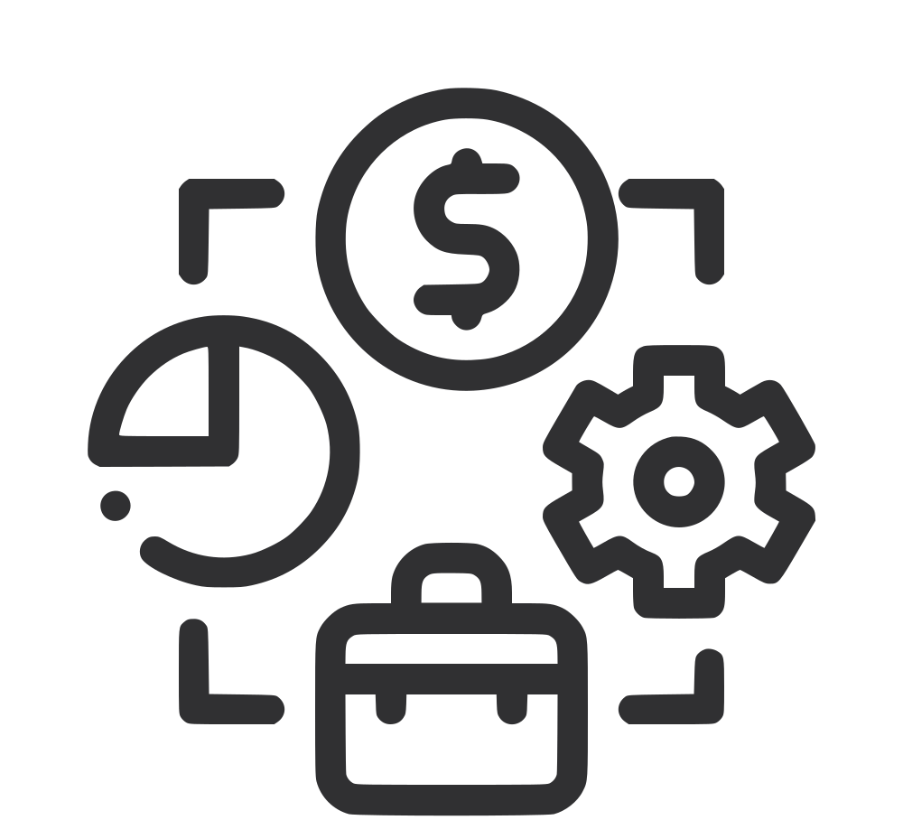

Crescimento com o Tempo
Investir desde jovem é como plantar uma árvore: quanto antes você começa, mais ela cresce ao longo dos anos. O tempo é um grande aliado para fazer seu investimento se multiplicar.
Alcance seus Objetivos Mais Rápido
Imagine ter o poder de fazer o seu dinheiro trabalhar para você. Começar cedo significa aprender sobre o mundo financeiro enquanto vê seus primeiros investimentos dando frutos.
Faça o Dinheiro Trabalhar para Você
Ao investir cedo, você acumula experiência e pode realizar seus sonhos mais rapidamente, seja comprar algo importante, fazer aquela viagem dos sonhos ou dar os primeiros passos rumo a objetivos maiores.
O Poder do Crescimento Gradual
Mesmo começando com pouco, os investimentos crescem e se multiplicam com o tempo, ajudando você a construir um futuro mais sólido e podendo fazer uma grande diferença em sua vida!
Aprenda & Invista
Histórias de Sucesso: Jovens Investidores
Investir é um passo importante para quem quer aprender a cuidar do próprio dinheiro e se preparar para o futuro. Ao contrário do que muitos pensam, investir não é algo exclusivo para adultos ou pessoas com muito dinheiro. Na verdade, o investimento é para todos, inclusive para jovens como você! Quanto mais cedo você começa a investir, mais tempo seu dinheiro tem para crescer e gerar bons resultados.
5 Erros Comuns de Investidores Iniciantes
Investir é um passo importante para alcançar a independência financeira, mas os iniciantes muitas vezes cometem erros que podem comprometer seus resultados.
Como Investir em Fundos Imobiliários
Investir em Fundos Imobiliários (FIIs) é uma forma de aplicar em imóveis sem precisar, de fato, comprar um. Com FIIs, você investe em um grupo de imóveis, como shopping centers, escritórios, hospitais e até galpões logísticos.
Introdução ao Mercado de Ações
O mercado de ações é um ambiente onde empresas e investidores se conectam para negociar partes de uma empresa, chamadas de ações. Ao comprar uma ação, você está adquirindo uma pequena parcela de uma empresa, tornando-se, de certa forma, sócio dela.
Aprenda mais sobre o mundo dos investimentos!
Investir pode parecer complicado no início, mas, na verdade, é uma maneira incrível de alcançar seus objetivos e construir um futuro financeiro seguro. Quanto mais você aprende sobre investimentos, mais entende como fazer seu dinheiro trabalhar para você. Explorando diferentes tipos de investimento, como ações, fundos imobiliários e até a poupança, você descobre qual é o caminho certo para cada objetivo. Então, por que não começar agora? Conheça as oportunidades, aprenda a lidar com riscos e comece a dar os primeiros passos para garantir um futuro cheio de realizações!
Um dos principais motivos para começar a investir é a liberdade financeira. Investir é uma forma de fazer o dinheiro trabalhar para você. Em vez de guardar tudo na poupança, onde os ganhos são muito baixos, o investimento ...